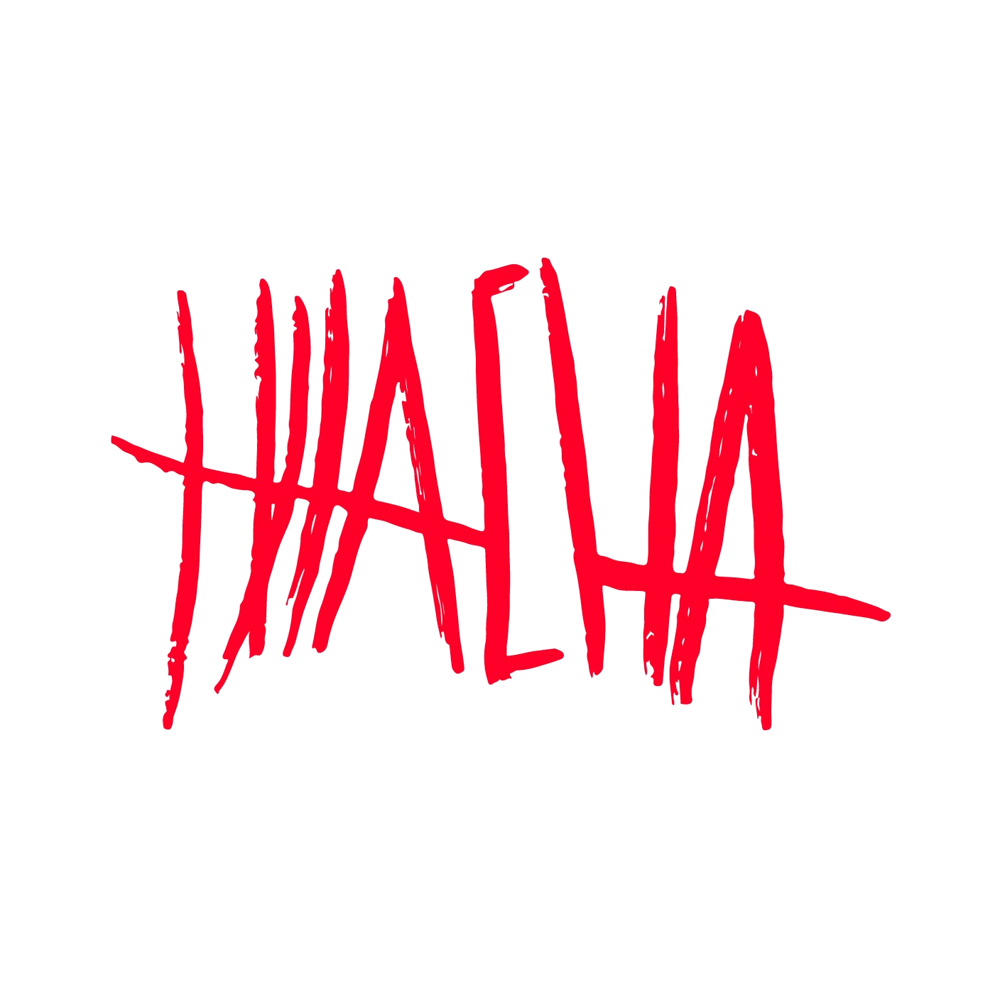
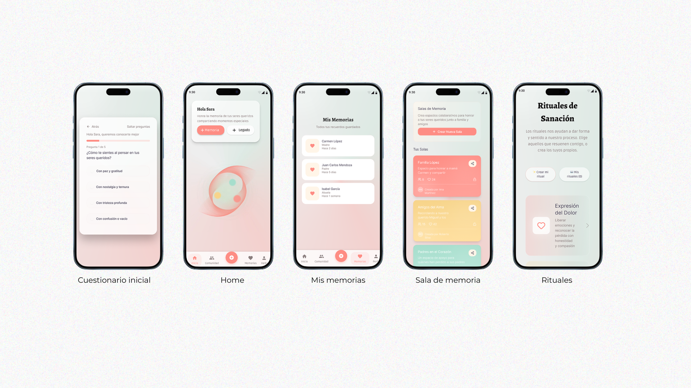
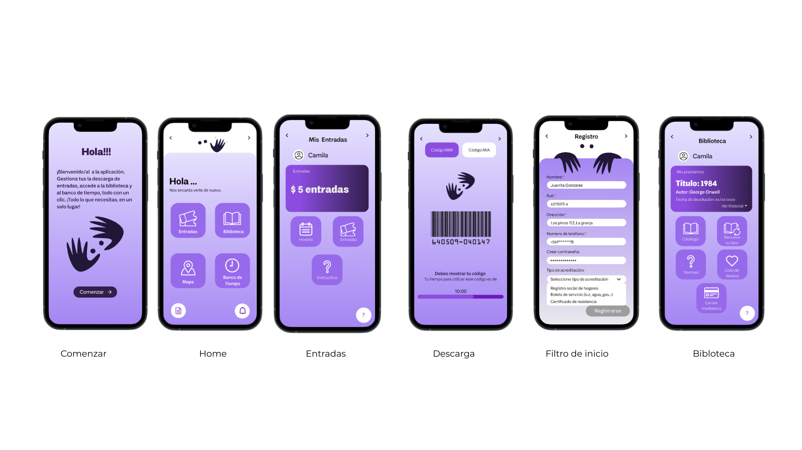
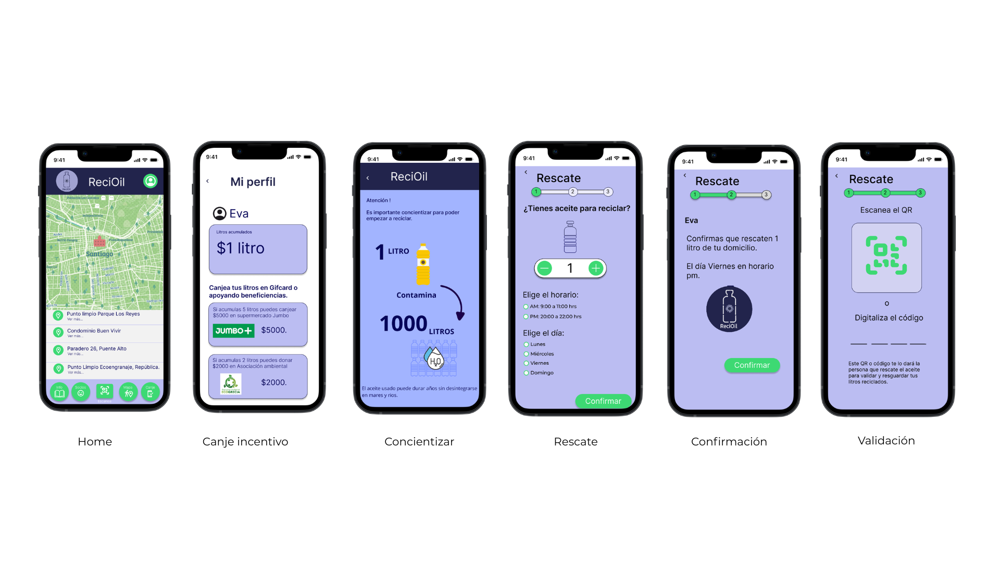

Proyectos destacados
Experiencias diseñadas con metodología centrada en el usuario, desde investigación hasta prototipo de alta fidelidad.

Hilacha
Marca de moda que descose el relato detrás de cada prenda. Diseño y desarrollo web + app complementaria.

Memorias Vivas
Plataforma que resignifica el duelo a través de ritos simbólicos y objetos de conmemoración.

MIM Vecinos
App para fortalecer la vinculación de los residentes de La Granja con el Museo Interactivo Mirador.

BioMateria
Software para diseñadores que integra IA mediante protocolo OSC para crear biomateriales.

Pullman del Sur
Rediseño de la app de compra de pasajes con foco en la experiencia de usuarios frecuentes.

ReciOil
App que incentiva el reciclaje de aceite de cocina mediante recompensas y recogida a domicilio.

Eternal Lamp
Lámpara interactiva con Arduino que activa audios de seres queridos al detectar presencia.